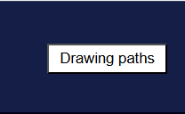

In this level, rainbow trout swim upstream, struggling through the turbulent stream and floating logs, heading towards the safe habitat upstream. You need to guide them to avoid rocks and logs within 45 seconds, collect rare yellow fruits in the water to increase the number of fish, and finally reach the green circle finish line.
Second level: Rainbow trout swimming upstream
Round introduce
Interaction method：

- You can change the way you control the fish by clicking the ‘Draw Route’ button.
- When not clicking to draw lines, you can click the mouse to attract fish to gather, thereby guiding the fish to move.
- Click the Draw Route button to draw a line to guide the fish school. The fish school will follow your route.

Avoid obstacles
- Floating rocks
- Floating wooden stakes

Collect items
- yellow fruit（Every time the school of fish collects a yellow fruit, another fish joins the school.）

Conditions for success
- At least 50% of the fish reached the finish line within 45 seconds.
Failure conditions
- Survival rate below 50% or timeout
Downloading...